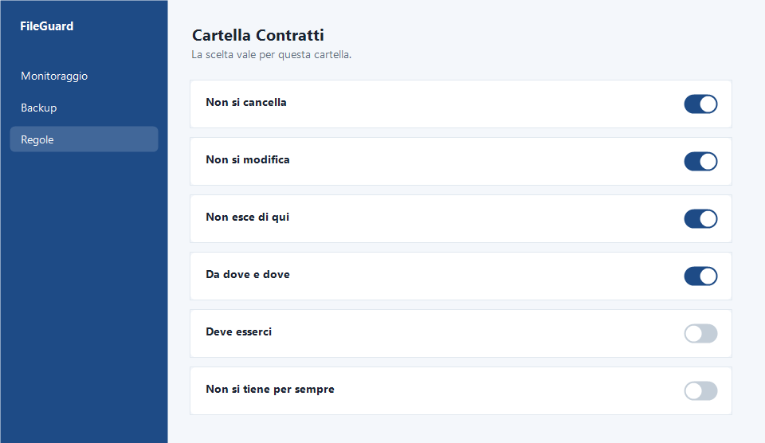
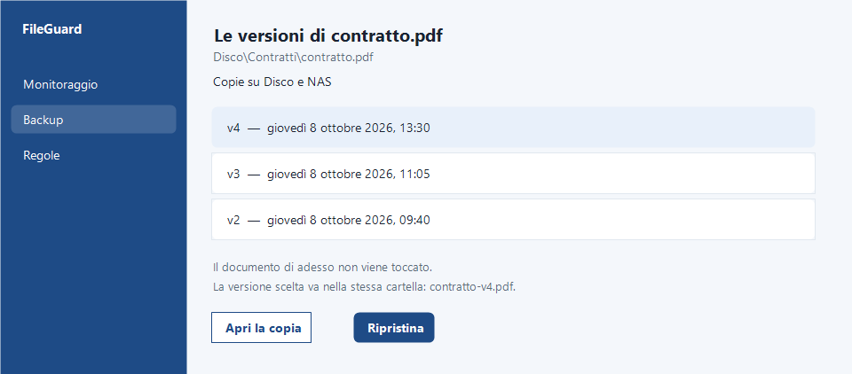

Ogni spostamento
FileGuard segue ciò che c’è dentro e notifica ogni spostamento o cancellazione.
FileGuard monitora cartelle e file sensibili, tiene traccia e aiuta nella gestione di privacy e GDPR.
Cartelle e file restano sotto osservazione.
FileGuard segue ciò che c’è dentro e notifica ogni spostamento o cancellazione.
Ogni cartella ha le sue regole.
FileGuard ti avvisa e traccia ogni modifica.
Avvisa quando un file viene modificato, spostato o eliminato. Dopo si vede da quale computer, e dove è finito, anche su unità esterne.

Quando un file sparisce o cambia posto, arriva la notifica.
La copia di backup è già lì: se è stato un errore, un click lo rimette al suo posto.
Lo rimette al posto originale con un click.

Quando serve una risposta su un documento, la traccia c’è.
In caso di controllo privacy o GDPR, FileGuard trova tutti i documenti su una persona e su un periodo specifico.
Mostra da quanto restano in quella cartella e se è possibile archiviarli.
FileGuard trova tutti i file che servono e ne ripercorre la storia.

Su ogni cartella si impostano fino a sei regole diverse. La scelta vale cartella per cartella.
Si scelgono cartella per cartella. L’ultima guarda da quanto tempo i file stanno lì. Decide chi gestisce la cartella. Il programma non cancella da solo.

Le copie restano su disco, server, NAS o un cloud già in uso. Anche in doppia copia.
Le copie restano sui dischi già in uso, anche in doppia copia.
Ogni modifica lascia una versione consultabile.
Si risale a ciò che c’era prima.

Marca temporale su un documento e installazione guidata con lo stesso account.
Si applica su un singolo documento.
Fino a 5 al mese.
Un wizard guida l’installazione, in pochi minuti.
Lo stesso account vale su tutti i computer.

Prova FileGuard.